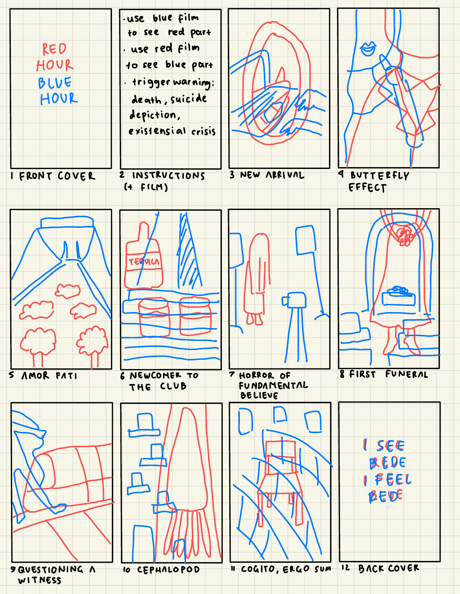

Red Hour Blue Hour
about the project
Red Hour Blue Hour is an experimental A5 zine inspired by fragments of my life in Germany. Through a series of personal and philosophical reflections, I explored how individual experiences could be translated into illustrations, typography, and overlapping colours.
The zine was designed around an anaglyph-inspired visual concept. Using transparent red and blue filters, readers can reveal different layers of each composition.
Getting the colours to work took quite a bit of trial and error, including multiple print tests and experiments with colour combinations. All illustrations were created in Procreate, with the publication assembled in Adobe InDesign.
What started as an experiment with colour eventually became a rather personal collection of stories, hidden in plain sight.
behind the colours
The original zine was meant to be experienced through transparent coloured filters. Try switching between red and blue to explore how different parts of the same illustration become more or less visible.
Original illustration — New Arrival.
This is a digital approximation of the physical colour-filter effect. Results may differ from viewing the printed zine through transparent film.
from sketch to print
The project began with a storyboard connecting personal experiences to visual concepts. I developed the illustrations around two overlapping colour layers, then experimented with their reproduction in print.
Two rounds of printing tests, each featuring ten different red and cyan combinations, helped me understand how colour behaves differently on screen and on paper.
